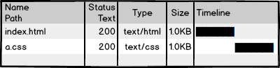
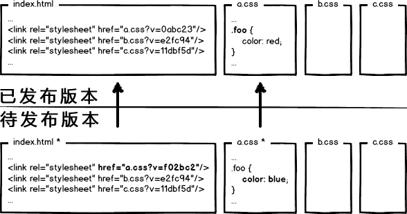
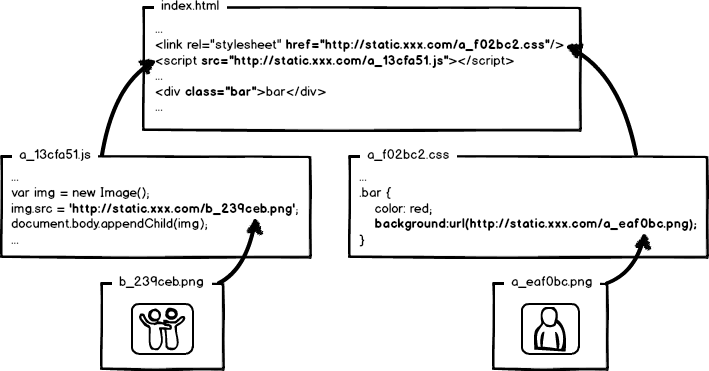

これは非常に面白い非主流フロントエンド領域、この分野で探求すべきは、エンジニアリングの手法を用いてフロントエンド開発とデプロイ最適化の総合問題を解決する方法です。業界に入ってから今までずっと学習と実践を続けています。
私の印象では、facebookはこの分野の始祖です。興味があって（壁を越える手段を）持っている人は、facebookのページのソースコードを見て、何がエンジニアリング化かを実感できるでしょう。
次に、原理から詳しく説明したいと思います。図が多く、長いので、辛抱強く読み終えていただければ幸いです。

原点に立ち返って、原始的なフロントエンド開発から話しましょう。上の図は「かわいい」index.htmlページとそのスタイルファイルa.cssです。テキストエディタでコードを書き、コンパイル不要、ローカルでプレビュー、OKを確認したらサーバーにアップロードして、ユーザーのアクセスを待ちます。フロントエンドはこんなに簡単で、とても面白い。ハードルがとても低く、あっという間に学べるでしょう！

それからページにアクセスして、表示を確認し、ネットワークリクエストを見てみます。200！いいね、あまりに™完璧だ！では、開発完了....したのか？
待って、まだ終わっていません！大企業にとって、あの異常なアクセス量と性能指標は、フロントエンドをまったく「面白く」なくしてしまうでしょう。
あのa.cssのリクエストを見てみましょう。ユーザーがページにアクセスするたびに読み込むとしたら、パフォーマンスに大きく影響し、帯域幅を無駄にするでしょう。できればこうしたい：

304を利用して、ブラウザにローカルキャッシュを使わせます。しかし、それで十分でしょうか？ダメです！304はネゴシエーションキャッシュと呼ばれ、これでもサーバーと一度通信しなければなりません。我々の最適化レベルは異常級なので、このリクエストを完全に消し去って、こうする必要があります：

ブラウザにローカルキャッシュ（cache-control/expires）を強制し、サーバーと通信させません。よし、リクエスト面の最適化は異常レベルに達しました。では問題です：ブラウザにリソースリクエストを一切させないのに、このキャッシュはどう更新するのか？
良い質問です。誰かが方法を思いついたでしょう：ページ内で参照されているリソースパスを更新することで、ブラウザにキャッシュを放棄させ、新しいリソースを読み込ませる。。例えばこうです：

次回のリリース時に、リンクアドレスを新しいバージョンに変更すれば、リソースを更新できるではないか。OK、問題は解決したのか？！もちろんしていません！大企業の異常さがまたやってきました。次のケースを考えてみましょう：

ページが3つのcssを参照しているが、あるリリースでその中のa.cssだけを変更した場合、すべてのリンクのバージョンを更新すると、b.css、c.cssのキャッシュも無効になり、また無駄が生じるではないか？！
再び異常モードを発動しましょう。この問題を解決するには、URLの変更をファイルの内容と関連付ける必要があることが簡単にわかります。つまり、ファイルの内容が変わった場合のみ、対応するURLが変更され、ファイルレベルの正確なキャッシュ制御を実現できます。
何がファイル内容と関連するでしょうか？自然に、データ要約アルゴリズムを使ってファイルの要約情報を求めることを連想します。要約情報はファイル内容と一対一に対応するので、単一ファイルの粒度まで正確なキャッシュ制御の根拠が得られます。よし、URLを要約情報付きに変更しましょう：

これでファイルが変更されても、そのファイルに対応するURLだけを更新すればよい。ここまで考えると完璧に見えます。これで十分だと思うか？大企業が教えてくれます：「甘い、甘すぎる！」
はぁ~~~~、一息つかせてくれ
現代のインターネット企業は、ウェブサイトのパフォーマンスをさらに向上させるために、静的リソースと動的Webページを異なるクラスタにデプロイします。静的リソースはCDNノードにデプロイされ、ウェブページ内で参照されるリソースも対応するデプロイパスになります。

さて、静的リソースを更新するとき、同時にHTML内の参照も更新することになります。例えばこうです：

今回のリリースでは、ページ構造とスタイルを同時に変更し、静的リソースに対応するURLアドレスも更新しました。いよいよコードを本番にリリースします。親愛なるフロントエンド開発の君、教えてくれ。先にページをリリースするのか、それとも先に静的リソースをリリースするのか？
先にページをデプロイし、その後リソースをデプロイする：この両者のデプロイ時間の間隔中に、ユーザーがページにアクセスすると、新しいページ構造で古いリソースを読み込み、この古いバージョンのリソースを新しいバージョンとしてキャッシュしてしまいます。結果として、ユーザーはスタイルが崩れたページにアクセスすることになり、手動で更新しない限り、リソースキャッシュが期限切れになるまでページはエラー状態が続きます。先にリソースをデプロイし、その後ページをデプロイする：デプロイの時間間隔内に、古いバージョンのリソースのローカルキャッシュを持つユーザーがサイトにアクセスした場合、リクエストされるページは古いバージョンであり、リソース参照は変わっていないため、ブラウザはそのままローカルキャッシュを使用します。この場合、ページは正常に表示されます。しかし、ローカルキャッシュを持たない、またはキャッシュが期限切れのユーザーがサイトにアクセスすると、古いバージョンのページが新しいバージョンのリソースを読み込む状況が発生し、ページエラーが起こります。ただし、ページのデプロイが完了すると、この部分のユーザーが再度ページにアクセスすれば正常に戻ります。 さて、上記の長々とした分析が言いたいことは：どちらを先にデプロイしてもダメです！どちらでもデプロイ中にページの表示崩れの問題が発生します。したがって、アクセス量が多くないプロジェクトでは、開発者に苦労してもらい、深夜にこっそりリリースし、先に静的リソースを上げてからページをデプロイすれば、問題が少なく見えます。
しかし、大企業は超異常で、そのような「絶対のなオフピーク時間帯」はなく、「相対のなオフピーク時間帯」しかありません。そのため、安定したサービスを提供するためには、極致を追求し続けなければなりません！
この厄介な問題は、リソースの「上書き方式のリリース」に起因します。リリース予定のリソースで既にリリース済みのリソースを上書きすると、このような問題が発生します。解決策は簡単で、「非上書き方式のリリース」を実現することです。

上の図のように、ファイルの要約情報を使ってリソースファイルをリネームし、要約情報をリソースファイルのリリースパスに含めます。これにより、内容が変更されたリソースは新しいファイルとして本番にリリースされ、既存のリソースファイルを上書きしません。リリースプロセスでは、まず静的リソースを全量デプロイし、次にページをカナリア（段階的）デプロイすることで、この問題はほぼ完璧に解決されます。
したがって、大企業の静的リソース最適化ソリューションは、基本的に以下のいくつかを実装する必要があります：
- 超長時間のローカルキャッシュを設定 —— 帯域幅を節約し、パフォーマンスを向上させる
- コンテンツ要約をキャッシュ更新の根拠として採用 —— 精密なキャッシュ制御
- 静的リソースのCDNデプロイ —— ネットワークリクエストを最適化
- リソースのリリースパスを変更して非上書きリリースを実現 —— スムーズなアップグレード
これを一式実施すると、比較的完全な静的リソースキャッシュ制御ソリューションになります。さらに注意すべきなのは、静的リソースのキャッシュ制御は、フロントエンドのすべての静的リソース読み込み箇所でこのような処理を行う必要があります。。そう、すべてです！js、cssは言うまでもなく、js、cssファイル内で参照されているリソースパスも含まれます。要約情報が関わるため、参照リソースの要約情報の変化が参照元ファイル自体の内容変更を引き起こし、結果として連鎖的な要約変化が生じます。おおよその概念図は次のようになります：

さて、ここまでフロントエンドエンジニアリングにおける静的リソースキャッシュの最適化とデプロイの問題について簡単に学んできました。すると新しい問題がやってきます：これでは™エンジニアはどうやってコードを書けばいいんだ！！！
最適化とエンジニアリングの融合の考え方を説明しようとすると、モジュール開発、リソース読み込み、リクエスト結合、フロントエンドフレームワークなど、さまざまなエンジニアリング問題がまた出てきます。上記はほんの入り口にすぎず、解決策こそが本質ですが、話すべきことはあまりに多いので、時間があるときにゆっくり展開しましょう。
とにかく、フロントエンドのパフォーマンス最適化は絶対にエンジニアリング問題です！
以上は私の空想ではありません。百度やfacebookのページおよび静的リソースのソースコードを観察して、それらのリソース参照パスの処理や、ネットワークリクエストにおける静的リソースのキャッシュ制御部分を確認してみてください。改めてfacebookのフロントエンドエンジニアリングの建設水準に感嘆します。脱帽です。
フロントエンドエンジニアにはぜひフロントエンドエンジニアリング分野に注目してほしいです。自分の製品は小さくて、こんなに極端なことをする必要はないと感じる人もいるかもしれませんが、もしかしたらある日、このような変更が必要になるかもしれません。また、物事をより極限まで追求できるのであれば、なぜやらないのでしょうか？
また、これらは運用保守（DevOps）やバックエンドエンジニアが解決すべき問題だと思わないでほしいです。もし他の役割が解決する場合、人は常に自分が関心を持たない問題を他人に押し付けるものです。、それではフロントエンドエンジニアの開発プロセスは極めて大きな制約を受けることになります。このような状況は、一部の大企業でも珍しくありません！
出典：http://www.zhihu.com/question/20790576/answer/32602154